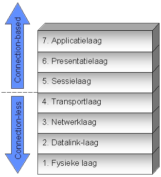

-
Dropdown
De toepassingslaag
De toepassingslaag is de bovenste laag in het drie-lagenmodel van een computer.
Het vertegenwoordigt de softwaretoepassingen waarmee gebruikers direct communiceren,
zoals tekstverwerkers, webbrowsers en e-mailclients. Hier vinden gebruikers interactie
plaats en worden gegevens ingevoerd, bewerkt en verwerkt. De toepassingslaag presenteert
informatie aan gebruikers en communiceert met de middenlaag en de onderliggende laag om
gegevens te halen, op te slaan en te verwerken.
